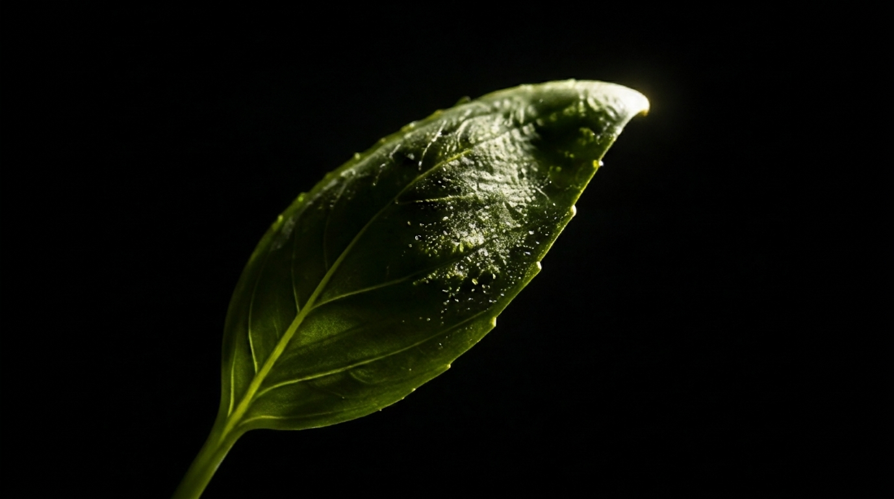
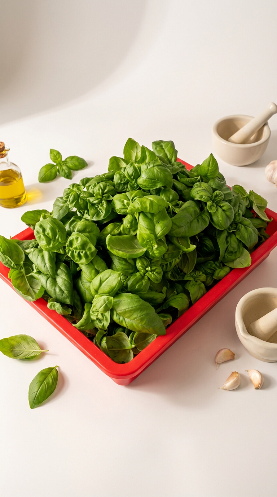
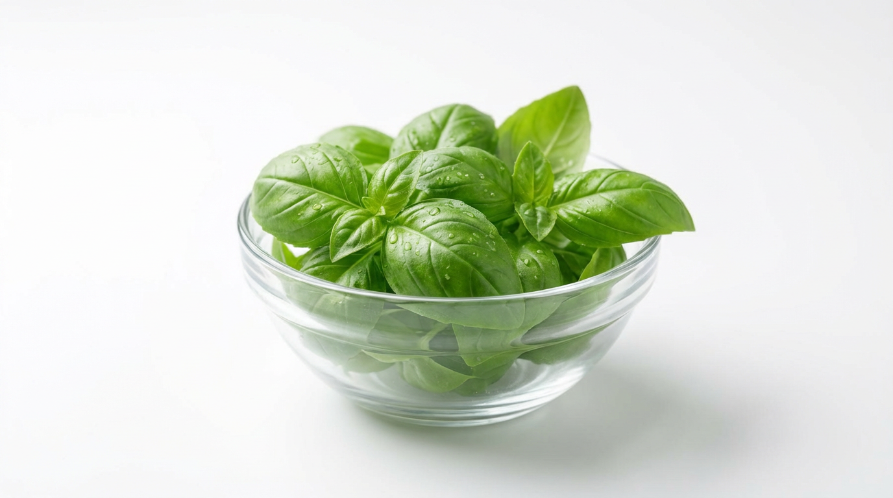
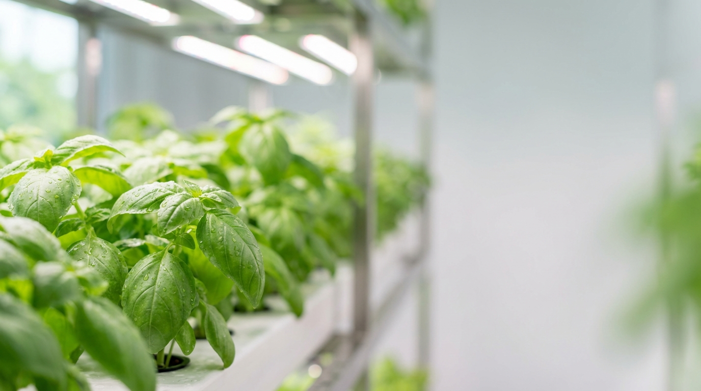
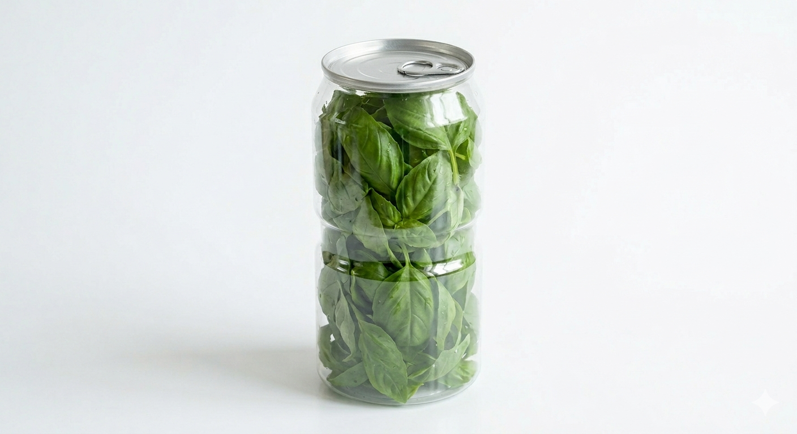
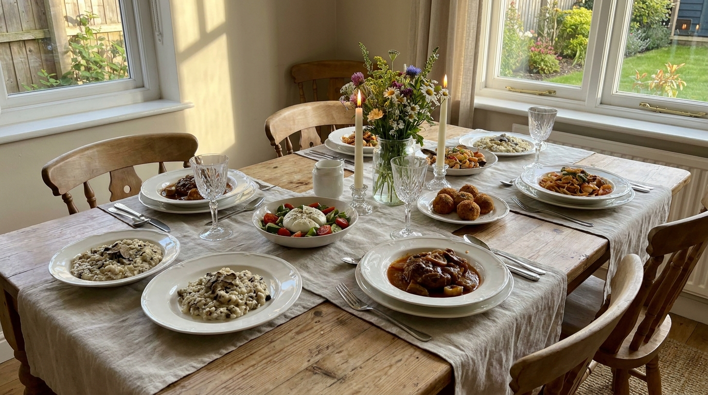
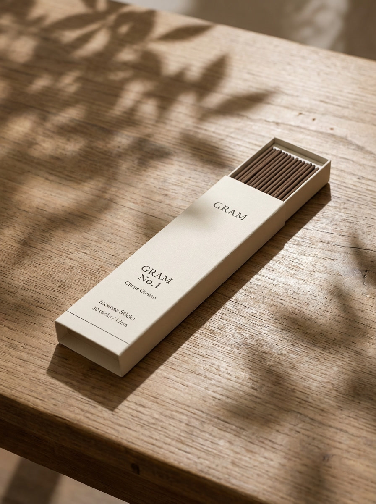
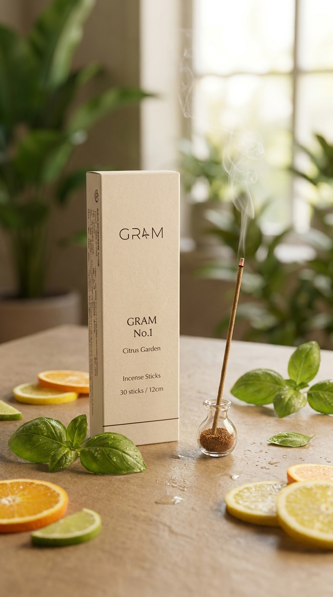
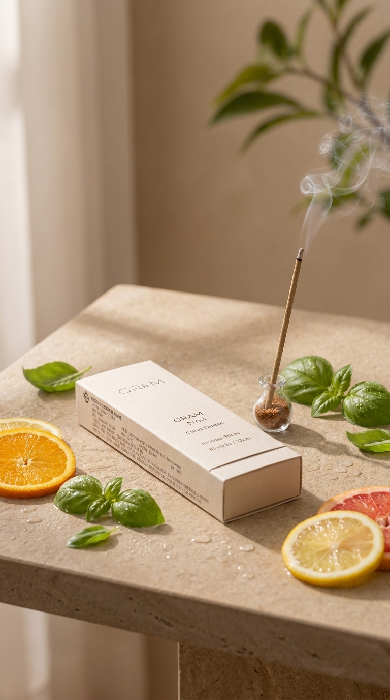
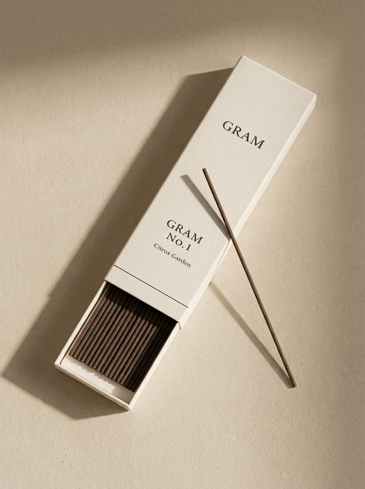

FRESHGRAM & BASIL
바질의 신선함에서 시작해
향의 경험으로 확장된 제품을 소개합니다
우리가 정성껏 키운 바질 생잎과 그 가치를 또 다른 방식으로 풀어낸 인센스까지.
브랜드의 기준이 담긴 두 가지 제품을 만나보세요.
깊은 향과 두꺼운 잎이 만드는 분명한 차이

실내 스마트팜과 황토볼 기반 수경 재배로 키운
깊은 향과 두꺼운 잎의 바질
우리가 재배하는 바질 생잎은 안정적인 실내 스마트팜 환경에서 자라며,
황토볼 수경 재배 방식으로 세심하게 관리됩니다.
그 결과, 향은 더욱 깊고 잎은 더욱 탄탄한 바질이 완성됩니다.
가까이 갈수록 더 분명하게 느껴지는
선명한 바질의 아로마

눈으로도, 손끝으로도 느껴지는
탄탄한 잎의 밀도

정교하게 설계된 재배 환경이 만드는
균형 잡힌 생육과 품질

건강한 생육을 고려한 관리로
더 안정적인 품질을 지향합니다
실제 재배·출하되는 바질 생잎의 모습입니다.


basil

basil

basil


바질 생잎은 요리의 한 부분을 넘어 접시 위의 분위기와 향의 인상까지 완성합니다. 샐러드, 파스타, 샌드위치, 브런치 메뉴 등 신선함과 존재감이 필요한 순간에 더욱 잘 어울립니다.
직접 키운 바질을 직접 말리고 재조하여
향의 경험으로 완성한 인센스
우리의 인센스는 좋은 생잎에서 시작됩니다.
정성껏 키운 바질을 직접 건조하고 재조하여,
생잎의 가치를 공간 속에 머무는 향으로 확장했습니다.

생잎의 신선한 인상을
또 다른 방식의 경험으로 연결합니다
직접 키우고, 직접 말리고, 직접 재조해
FRESHGRAM 기준을 끝까지 이어갑니다
바질이 가진 푸르른 인상과 깊이 있는 향을
공간감 있는 무드로 풀어냅니다
식재료를 넘어
감각적인 라이프스타일 제품으로 확장됩니다
바질을 직접 말리고 재조한 인센스 제품입니다.

Basil Incense

Basil Incense

Basil Incense
스마트팜에서 정성껏 재배합니다.
직접 말려 향을 세심한 관리로 농축합니다
직접 재조해 인센스 완성합니다
공간에 머무는 향의 경험을 제공합니다.
이 인센스는 단순한 파생상품이 아닙니다. 우리가 바질을 재배하며 중요하게 여긴 향과 감각을 다른 형태로 풀어낸 또 하나의 결과물입니다.
생잎이 신선함으로 기억된다면, 인센스는 그 향을 더 오래 머무르게 합니다. 하나의 재배 철학이 두 가지 방식의 경험으로 이어집니다.
"신선한 잎에서 시작된 감각이
공간 속에 머무는 향으로 이어집니다"

집, 작업실, 스튜디오, 쇼룸 등 향이 분위기를 만드는 공간에 자연스럽게 어울립니다. 바질 인센스는 공간에 은은한 여운을 더하며, 브랜드가 전하고자 하는 감각을 일상 속으로 확장합니다.